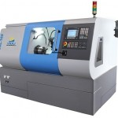
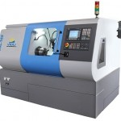

ТЕХНИЧАР ЗА ИНДУСТРИСКА МЕХАТРОНИКА
Овој образовен профил е базиран на германскиот модел на дуално стручно образование при што посебен акцент се става на практичната обука што ќе се спроведува во компании.
Практичната обука ќе се спроведува во компаниите Костал, ЛТХ Леарница, ОДВ-Електрик и Магна Интернационал.
Врши интервенции од електротехничка и машинска природа на мехатронички системи, применува ИТ опрема во автоматизирани процеси; програмира компјутерски системи и автоматизирани процеси со примена на програмски јазици; инсталира, одржува компјутери и периферна компјутерска опрема; работи со интелигентни системи и роботи; извршува интервенции на автоматизирано управувани процеси и применува стандарди при работа со компјутерска технологија и др. Предлага мерки за подобрување на енергетската ефикасност во објекти при различни ситуации и го намалува трошокот на енергија со различни дејствија и активности. Користи и пополнува техничко–технолошка документација. Почитува и применува правила и прописи од областа на безбедноста на работа, безбедноста на работното место и процедурите за безбедна и правилна манипулација на мехатронички системи.
Со стекнување на квалификацијатa, ученикот ќе може да работи во различни работни средини како што се: ИКТ индустријата, интелигентни и роботски системи, автоматизирани индустриски погони, станбени објекти, установи за јавни услуги, медиуми, установи за туризам, угостителство, образование, наука, здравство, земјоделие и др., како и да развива сопствен бизнис. Исто така, ќе може да извршува работни задачи како: Електротехничар за автоматски и контролни системи, Техничар за процесна автоматика, Техничар за роботика и интелигентни системи, Електротехничар за комуникации, мерења и управување во електроенергетиката, Оператор на електрични машини и електромоторни погони, Оператор на компјутерски управувани системи, Оператор на технологијата на обработка на метали со деформација и режење и на други работни места, согласно со квалификацијата.
Наставен план за образовниот профил Техничар за индустриска мехатроника
 

ЕЛЕКТРОТЕХНИЧАР ЕНЕРГЕТИЧАР
Открива дефекти и врши интервенции од електрична и не електрична природа на електрични инсталации и осветлување, контролира и анализира параметри и податоци добиени од мерни инструменти заради управување и регулирање во електро- енергетиката, управува, контролира и одржува електрични централи, електроенергетски постројки и електромоторни погони, изведува операции на високонапонски и нисконапонски електроенергетски мрежи, сервисира, одржува и поправа куќни апарати и уреди.
Со стекнување на квалификацијата Електротехничар-енергетичар ќе може да работи во различни работни средини како што се: производство, пренос и дистрибуција на електрична енергија, осветлување на отворени и затворени површини, индустриски погони, станбени објекти, установи за јавни услуги, сервиси за куќни апарати, медиуми, установи за туризам, угостителство, образование, наука, здравство, земјоделие и др., како и да развива сопствен бизнис.
Исто така, ќе може да извршува работни задачи како: Електротехничар за електрични инсталации и осветлување; Електротехничар за комуникации, мерења и управување во електроенергетиката; Електротехничар за производство, пренос и дистрибуција на електрична енергија; Оператор на електрични машини и електромоторни погони и Оператор на електрични апарати и уреди за домаќинство и погон и на други работни места, согласно со квалификацијата.
Наставен план за образовниот профил Електротехничар-енергетичар
ЕЛЕКТРОТЕХНИЧАР ЗА ЕЛЕКТРОНИКА И ТЕЛЕКОМУНИКАЦИИ
Монтира, инсталира, одржува, сервисира и ракува автоматски и контролни системи, аудио и видео уреди, телекомуникациска опрема и мрежи и мобилна телефонија; следи и ја оптимизира работата; решава проблеми, контролира квалитет и применува мерки за заштита и безбедност при работа и почитување на заштитата на животната средина.
Со стекнување на квалификацијата Електротехничар за електроника и телекомуникации ќе може да работи во различни работни средини како што се: оператори на мобилна телефонија, телекомуникациски оператори, радиотелевизиски куќи и станици, медиуми, установи за јавни услуги, компании за сообраќај и транспорт, компании за производство, пренос и дистрибуција на електронски податоци, здравствени и социјални установи, образовни и научни институции, институции за туризам и угостителство, компании за земјоделие и хортикултура, филмска индустрија и други, а може да развива и сопствен бизнис.
Исто така, ќе може да извршува работни задачи како: Техничар за електронски елементи, апарати и уреди; Електротехничар за автоматски и контролни системи; Електротехничар за радио и телевизиски уреди Електротехничар за телекомуникациска опрема и мрежи; Електротехничар за мобилна телефонија; Снимател на слика и Монтажер на слика и тон и на други работни места, согласно со квалификацијата.
Наставен план за образовниот профил Електротехничар за електроника и телекомуникации

ЕЛЕКТРОТЕХНИЧАР ЗА КОМПЈУТЕРСКА ТЕХНИКА И АВТОМАТИКА
Врши интервенции од електротехничка природа на ИТ опрема и автоматизирани процеси; програмира компјутерски системи и автоматизирани процеси со примена на програмски јазици; самостојно работи со бази на податоци; инсталира, одржува и сервисира компјутери, компјутерски мрежи и периферна компјутерска опрема; работи со интелигентни системи и роботи; извршува интервенции при визуелна и програмска изведба на веб-страници и применува стандарди при работа со компјутерска технологија и др.
Со стекнување на квалификацијатa, ученикот ќе може да работи во различни работни средини како што се: ИКТ индустријата, компјутерски мрежи, интелигентни и роботски системи, веб-дизајн, производство, пренос и дистрибуција на електрична енергија, осветлување на отворени и затворени површини, автоматизирани индустриски погони, станбени објекти, установи за јавни услуги, медиуми, установи за туризам, угостителство, образование, наука, здравство, земјоделие и др., како и да развива сопствен бизнис.
Исто така, ќе може да извршува работни задачи како: Техничар за роботика и интелигентни системи; Оператор на бази на податоци; Техничар за процесна автоматика; Техничар електроничар за компјутери; Техничар за компјутерски системи и мрежи; Веб – техничар и Техничар на информатичко комуникациски технологии (ИКТ) за поддршка на корисници и на други работни места согласно квалификацијата.
Наставен план за образовниот профил Електротехничар за компјутерска техника и автоматика
ЕЛЕКТРОМЕХАНИЧАР
Занимање прилагодено на европските стандарди.
-одржување и монтирање на електрични автоматски уреди и машини;
-поврзување и монтирање на електропневматски компоненти и PLC;
-монтирање и одржување на ел. куќни и индустриски инсталации;
ЕЛЕКТРОМЕХАНИЧАР ЗА ЕЛЕКТРОНИКА И ТЕЛЕКОМУНИКАЦИИ
-монтажа и одржување на електронски системи, уреди и опрема;
-потребни квалификации за сервисирање – овој образовен профил е за одржување на TV и радио опрема;